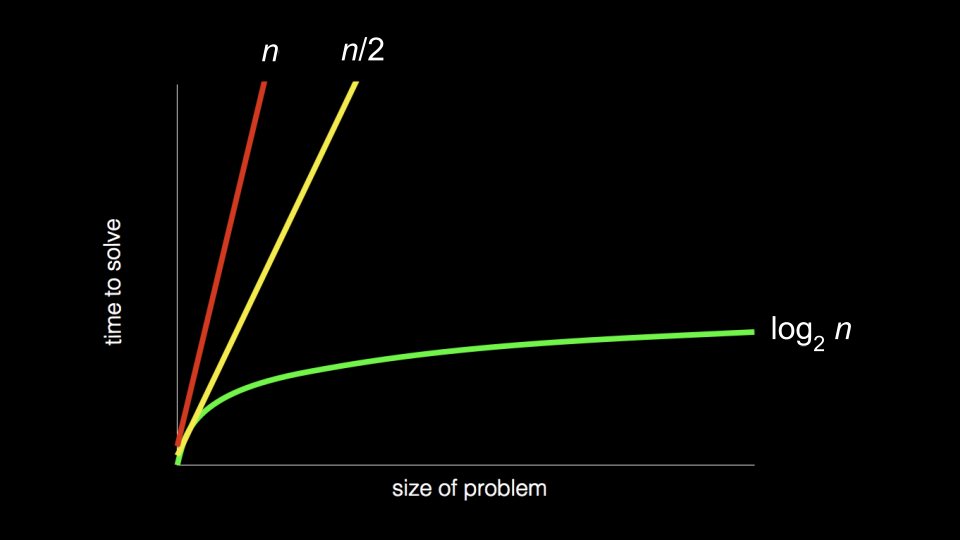
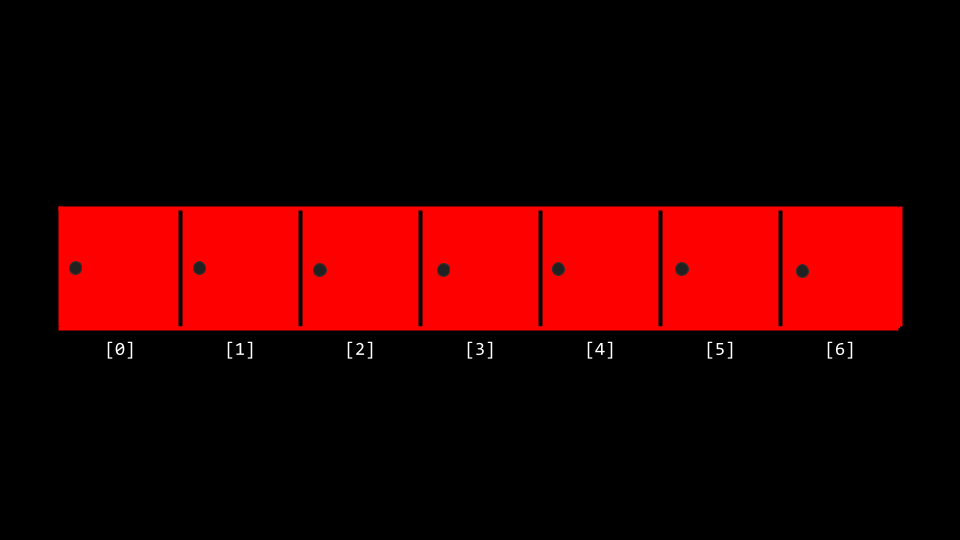
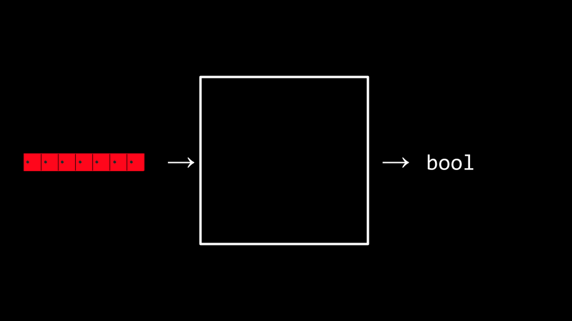
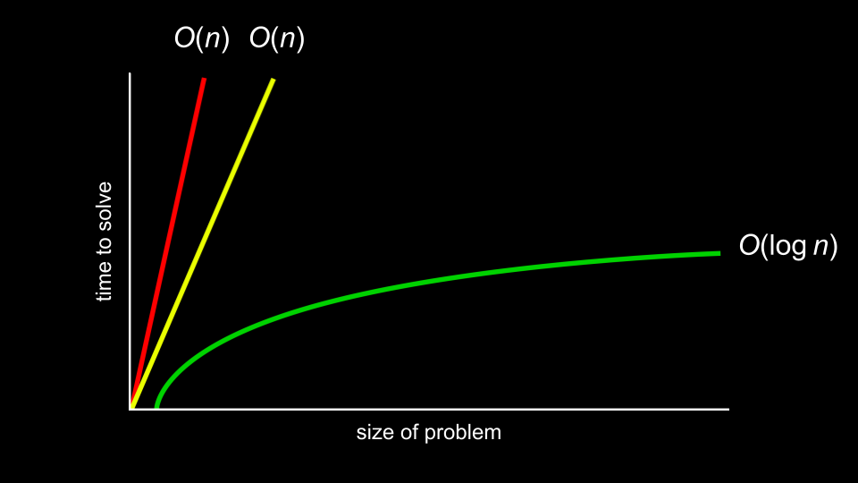
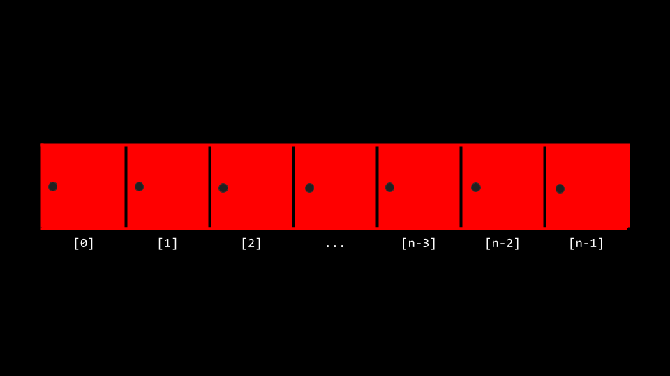

讲座 3
欢迎!
- In 周 zero, we introduced the idea of an algorithm: a black box that 五月 take an input and creates an output.
- This 周, we are going to expand upon our understanding of 算法 through pseudocode and into code itself.
- Also, we are going to consider the efficiency of these 算法. Indeed, we are going to be building upon our understanding of how to use some of the lower-level concepts we discussed last 周 in building 算法.
-
Recall 返回 to earlier in the 课程 when we introduced the following graph:

- As we step into this 周, you should consider how the way an algorithm works with a 问题 五月 determine the 时间 it takes to solve a 问题! 算法 can be designed to be 更多 and 更多 efficient, to a limit.
- Today, we will focus upon the design of 算法 and how to measure their efficiency.
Linear 搜索
- Recall that last 周 you were introduced to the idea of an array, blocks of 内存 that are consecutive: side-by-side with one another.
-
You can metaphorically imagine an array like a series of seven red lockers as follows:

- We can imagine that we have an essential 问题 of wanting to know, “Is the number 50 inside an array?” A computer must look 在 each locker to be able to see if the number 50 is inside. We call this process of finding such a number, character, string, or other item searching.
-
We can potentially hand our array to an algorithm, wherein our algorithm will 搜索 through our lockers to see if the number 50 is behind one of the doors: Returning the value true or false.

-
We can imagine various instructions we might provide our algorithm to undertake this task as follows:
For each door from left to right If 50 is behind door Return true Return falseNotice that the above instructions are called pseudocode: A human-readable version of the instructions that we could provide the computer.
-
A computer scientist could translate that pseudocode as follows:
For i from 0 to n-1 If 50 is behind doors[i] Return true Return falseNotice that the above is still not code, but it is a pretty 关闭 approximation of what the final code might look like.
二分搜索
- 二分搜索 is another 搜索 algorithm that could be employed in our task of finding the 50.
-
Assuming that the values within the lockers have been arranged from smallest to largest, the pseudocode for 二分搜索 would appear as follows:
If no doors left Return false If 50 is behind middle door Return true Else if 50 < middle door Search left half Else if 50 > middle door Search right half -
Using the nomenclature of code, we can further modify our algorithm as follows:
If no doors left Return false If 50 is behind doors[middle] Return true Else if 50 < doors[middle] Search doors[0] through doors[middle - 1] Else if 50 > doors[middle] Search doors[middle + 1] through doors[n - 1]Notice, looking 在 this approximation of code, you can nearly imagine what this might look like in actual code.
Running 时间
-
running 时间 involves an analysis using big O notation. Take a look 在 the following graph:

- Rather than being ultra-specific 关于 the mathematical efficiency of an algorithm, computer scientists discuss efficiency in terms of the order of various running times.
- In the above graph, the first algorithm is \(O(n)\) or in the order of n. The second is in \(O(n)\) as well. The third is in \(O(\log n)\).
-
It’s the shape of the curve that shows the efficiency of an algorithm. Some common running times we 五月 see are:
- \(O(n^2)\)
- \(O(n \log n)\)
- \(O(n)\)
- \(O(\log n)\)
- \(O(1)\)
- Of the running times above, \(O(n^2)\) is considered the worst running 时间, \(O(1)\) is the fastest.
- Linear 搜索 was of order \(O(n)\) because it could take n steps in the worst case to run.
- 二分搜索 was of order \(O(\log n)\) because it would take fewer and fewer steps to run even in the worst case.
- Programmers are interested in both the worst case, or upper bound, and the best case, or lower bound.
- The \(\Omega\) symbol is used to denote the best case of an algorithm, such as \(\Omega(\log n)\).
- The \(\Theta\) symbol is used to denote where the upper bound and lower bound are the same, where the best case and the worst case running times are the same.
- As you continue to develop your knowledge in 计算机科学, you will explore these topics in 更多 detail in future 课程.
搜索.C
-
You can implement linear 搜索 ourselves by typing
code search.cin your terminal window and by writing code as follows:#include <cs50.h> #include <stdio.h> int main(void) { // An array of integers int numbers[] = {20, 500, 10, 5, 100, 1, 50}; // Search for number int n = get_int("Number: "); for (int i = 0; i < 7; i++) { if (numbers[i] == n) { printf("Found\n"); return 0; } } printf("Not found\n"); return 1; }Notice that the line beginning with
int numbers[]allows us to define the values of each element of the array as we create it. Then, in theforloop, we have an implementation of linear 搜索.return 0is used to indicate success and exit the program.return 1is used to exist the program with an error (failure). - We have now implemented linear 搜索 ourselves in C!
-
What if we wanted to 搜索 for a string within an array? Modify your code as follows:
#include <cs50.h> #include <stdio.h> #include <string.h> int main(void) { // An array of strings string strings[] = {"battleship", "boot", "cannon", "iron", "thimble", "top hat"}; // Search for string string s = get_string("String: "); for (int i = 0; i < 6; i++) { if (strcmp(strings[i], s) == 0) { printf("Found\n"); return 0; } } printf("Not found\n"); return 1; }Notice that we cannot utilize
==as in our 上一页 iteration of this program. Instead, we usestrcmp, which comes from thestring.hlibrary.strcmpwill return0if the strings are the same. -
Indeed, running this code allows us to iterate over this array of strings to see if a certain string was within it. However, if you see a segmentation fault, where a part of 内存 was touched by your program that it should not have access to, do make sure you have
i < 6noted above instead ofi < 7. -
We can combine these ideas of both numbers and strings into a single program. Type
code phonebook.cinto your terminal window and write code as follows:#include <cs50.h> #include <stdio.h> #include <string.h> int main(void) { // Arrays of strings string names[] = {"Carter", "David", "John"}; string numbers[] = {"+1-617-495-1000", "+1-617-495-1000", "+1-949-468-2750"}; // Search for name string name = get_string("Name: "); for (int i = 0; i < 3; i++) { if (strcmp(names[i], name) == 0) { printf("Found %s\n", numbers[i]); return 0; } } printf("Not found\n"); return 1; }Notice that Carter’s number begins with
+1-617, David’s 电话 number starts with+1-617, and John’s number starts with+1-949. Therefore,names[0]is Carter andnumbers[0]is Carter’s number. This code will allow us to 搜索 the phonebook to for a person’s specific number. - While this code works, there are numerous inefficiencies. Indeed, there is a chance that people’s names and numbers 五月 not correspond. Wouldn’t be nice if we could create our own data type where we could associate a person with the 电话 number?
数据结构
- It turns out that C allows a way by which we can create our own data types via a
struct. - Would it not be useful to create our own data type called a
person, that has inside of it anameandnumber. -
Modify your code as follows:
#include <cs50.h> #include <stdio.h> #include <string.h> typedef struct { string name; string number; } person; int main(void) { person people[3]; people[0].name = "Carter"; people[0].number = "+1-617-495-1000"; people[1].name = "David"; people[1].number = "+1-617-495-1000"; people[2].name = "John"; people[2].number = "+1-949-468-2750"; // Search for name string name = get_string("Name: "); for (int i = 0; i < 3; i++) { if (strcmp(people[i].name, name) == 0) { printf("Found %s\n", people[i].number); return 0; } } printf("Not found\n"); return 1; }Notice that the code begins with
typedef structwhere a 新内容 datatype calledpersonis defined. Inside apersonis a string callednameand astringcalled number. In themainfunction, begin by creating an array calledpeoplethat is of typepersonthat is a size of 3. Then, we update the names and 电话 numbers of the two people in ourpeoplearray. Most important, notice how the dot notation such aspeople[0].nameallows us to access theperson在 the 0th 地点 and assign that individual a 姓名.
Sorting
- Sorting is the act of taking an unsorted list of values and transforming this list into a sorted one.
- When a list is sorted, searching that list is far 较少 taxing on the computer. Recall that we can use 二分搜索 on a sorted list, but not on an unsorted one.
- It turns out that there are many different types of sorting 算法.
- 选择排序 is one such 搜索 algorithm.
-
We can represent an array as follows:

-
The algorithm for 选择排序 in pseudocode is:
For i from 0 to n–1 Find smallest number between numbers[i] and numbers[n-1] Swap smallest number with numbers[i] -
Summarizing those steps, the first 时间 iterating through the list took
n - 1steps. The second 时间, it tookn - 2steps. Carrying this logic forward, the steps 必需 could be represented as follows:(n - 1) + (n - 2) + (n - 3) + ... + 1 - This could be simplified to n(n-1)/2 or, 更多 simply, \(O(n^2)\).
冒泡排序
- 冒泡排序 is another sorting algorithm that works by repeatedly swapping elements to “bubble” larger elements to the 结束.
-
The pseudocode for 冒泡排序 is:
Repeat n-1 times For i from 0 to n–2 If numbers[i] and numbers[i+1] out of order Swap them If no swaps Quit - As we further 排序 the array, we know 更多 and 更多 of it becomes sorted, so we only need to look 在 the pairs of numbers that haven’t been sorted yet.
-
Analyzing 选择排序, we made only seven comparisons. Representing this mathematically, where n represents the number of cases, it could be said that 选择排序 can be analyzed as:
(n - 1) + (n - 2) + (n - 3) + ... + 1or, 更多 simply \(n^2/2 - n/2\).
- Considering that mathematical analysis, n2 is really the most influential factor in determining the efficiency of this algorithm. Therefore, 选择排序 is considered to be of the order of \(O(n^2)\) in the worst case where all values are unsorted. Even when all values are sorted, it will take the same number of steps. Therefore, the best case can be noted as \(\Omega(n^2)\). Since both the upper bound and lower bound cases are the same, the efficiency of this algorithm as a whole can be regarded as \(\Theta(n^2)\).
- Analyzing 冒泡排序, the worst case is \(O(n^2)\). The best case is \(\Omega(n)\).
- You can visualize a comparison of these 算法.
递归
- How could we improve our efficiency in our sorting?
-
递归 is a concept within 编程 where a function calls itself. We saw this earlier when we saw…
If no doors left Return false If number behind middle door Return true Else if number < middle door Search left half Else if number > middle door Search right halfNotice that we are calling
searchon smaller and smaller iterations of this 问题. -
Similarly, in our pseudocode for 第 0 周, you can see where 递归 was implemented:
1 Pick up phone book 2 Open to middle of phone book 3 Look at page 4 If person is on page 5 Call person 6 Else if person is earlier in book 7 Open to middle of left half of book 8 Go back to line 3 9 Else if person is later in book 10 Open to middle of right half of book 11 Go back to line 3 12 Else 13 Quit -
This code could have been simplified, to highlight its recursive properties as follows:
1 Pick up phone book 2 Open to middle of phone book 3 Look at page 4 If person is on page 5 Call person 6 Else if person is earlier in book 7 Search left half of book 9 Else if person is later in book 10 Search right half of book 12 Else 13 Quit -
Consider how in 第 1 周 we wanted to create a pyramid structure as follows:
# ## ### #### -
To implement this using 递归, type
code recursion.cinto your terminal window and write code as follows:#include <cs50.h> #include <stdio.h> void draw(int n); int main(void) { draw(1); } void draw(int n) { for (int i = 0; i < n; i++) { printf("#"); } printf("\n"); draw(n + 1); }Notice that the draw function calls itself. Further, 笔记 that your code 五月 get caught in an infinite loop. To break from this loop, if you get stuck, hit
ctrl-con your keyboard. The reason this creates an infinite loop is that there is nothing telling the program to 结束. There is no case where the program is done. -
We can correct our code as follows:
#include <cs50.h> #include <stdio.h> void draw(int n); int main(void) { // Get height of pyramid int height = get_int("Height: "); // Draw pyramid draw(height); } void draw(int n) { // If nothing to draw if (n <= 0) { return; } // Draw pyramid of height n - 1 draw(n - 1); // Draw one more row of width n for (int i = 0; i < n; i++) { printf("#"); } printf("\n"); }Notice the base case will ensure the code does not run forever. The line
if (n <= 0)terminates the 递归 because the 问题 has been solved. Every 时间drawcalls itself, it calls itself byn-1. 在 some point,n-1will equal0, resulting in thedrawfunction returning and the program will 结束.
归并排序
- We can now leverage 递归 in our quest for a 更多 efficient 排序 algorithm and implement what is called 归并排序, a very efficient 排序 algorithm.
-
The pseudocode for 归并排序 is quite short:
If only one number Quit Else Sort left half of number Sort right half of number Merge sorted halves -
Consider the following list of numbers:
6341 -
First, 归并排序 asks, “is this one number?” The 答案 is “no,” so the algorithm continues.
6341 -
Second, 归并排序 will now split the numbers down the middle (or as 关闭 as it can get) and 排序 the left half of numbers.
63|41 -
Third, 归并排序 would look 在 these numbers on the left and ask, “is this one number?” Since the 答案 is no, it would then split the numbers on the left down the middle.
6|3 -
Fourth, 归并排序 will again ask , “is this one number?” The 答案 is yes this 时间! Therefore, it will quit this task and return to the last task it was running 在 this point:
63|41 -
Fifth, 归并排序 will 排序 the numbers on the left.
36|41 -
Now, we return to where we left off in the pseudocode now that the left side has been sorted. A similar process of steps 3-5 will occur with the right-hand numbers. This will result in:
36|14 -
Both halves are now sorted. Finally, the algorithm will merge both sides. It will look 在 the first number on the left and the first number on the right. It will put the smaller number first, then the second smallest. The algorithm will repeat this for all numbers, resulting in:
1346 - 归并排序 is complete, and the program quits.
- 归并排序 is a very efficient 排序 algorithm with a worst case of \(O(n \log n)\). The best case is still \(\Omega(n \log n)\) because the algorithm still must visit each place in the list. Therefore, 归并排序 is also \(\Theta(n \log n)\) since the best case and worst case are the same.
- A final visualization was shared.
Summing Up
In this lesson, you learned 关于 algorithmic thinking and building your own data types. Specifically, you learned…
- 算法.
- Big O notation.
- 二分搜索 and linear 搜索.
- Various 排序 算法, including 冒泡排序, 选择排序, and 归并排序.
- 递归.
See you 下一页 时间!